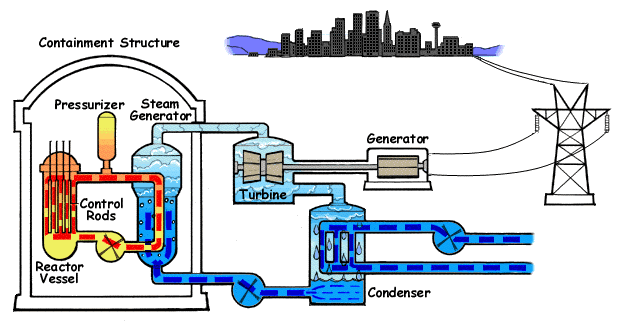

Generalizing Modal Analysis
Understanding Physical Systems
Many of the laws of physics, such as Newton's laws of motion $F={d(mv)}/{dt}$, are expressed as differential equations. A physical system can often be modelled as, or reduced to, a system of coupled ordinary differtial equations (ODEs). A good mathematical model is an important tool for a scientist or engineer because it help them explore and understand the behavior of the system better. A good mathematical model can help you tell if a design change results in a system that works better, or if the change makes the system perform worse. If you want to improve something, it sure helps if you understand it first and a good mathematical model gives you a way to explore how the system behaves.
Developing a good mathematical model is an important first step, but in order to understand the model, you need to understand the model solutions. The solutions to the model depend on the starting state of the system (or initial conditions) and its interaction with its surroundings (bondary conditions). A different set of initial or boundary conditions can lead to solutions to the system may look very different, and gaining a good understanding of how a system behaves under many different conditions can be a difficult challenge. Techniques for exploring the behavior of a mathematical model can be divided into quantitative techniques and qualitative techniques.

The goal of a quantitative technique is to calculate an accurate solution. An accurate solution to a good mathematical model can be useful for understanding the behavior of the actual system the model is based on. The accuracy of the solution may be very important when designing, improving, or determining the safety of the system since the solutions can used to answer specific question about the system, or about the effect a design change would have on the system. There are typically many questions to answer about a system, and different questions may require different models. For example, nuclear power plants are required to develop models to show what would occur if the system was punctured causing the cooling water to exit the system. This is used to verify that the nuclear plant safety systems are adequate to keep the rods from overheating and causing damage to the plant. A separate model would be used to determine whether the plant could withstand an earthquake without significant damage. But an accurate solution doesn't address one important question - How does the behavior of the system change as the initial or boundary conditions are changed and can the behavioral trends be characterized?
The goal of a qualitative technique is to understand the behavioral trends of a system under a range of conditions. Many qualitative techniques require a system to be simplified in one way or another in order to identify behavioral trends. In other words, accuracy may be sacrificed in order to gain a broader understanding of how the system behaves.
Both accuracy and an understanding of behavioral trends can be valuable information in practice, and a tools that combines both quantitative accuracy and qualitative understanding of trends can be very powerful.
Modal Analysis
For linear systems, modal analysis is an elegant blend of quantitative and qualitative techniques. It accurately predicts linear system response, but also characterizes the general behavior of the linear system. Modal analysis is built on simple idea - find a new coordinate system where the original system has a simpler form that is easier to understand. It turns out that for linear systems, where the linear coefficients are constant, there is always a coordinate system where the system of ODEs has a simple form called the Jordan cannonical form. In many cases, when coordinates are selected such that the system is in Jordan cannonical form, all of the ODEs in the system are decoupled, which means they can be solved and studied independently. In some cases, referred to as degenerate cases, there is a simple coupling between some of the ODEs in the system. Only the more common nondegenerate cases are discussed below.
Modal Analysis the process of finding a new linear coordinate system where the ODEs of the system are decoupled from one another. The new coordinates are called modal coordinates.
Definition
Modal Coordinate - A linear function $q(x_1,x_2,...,x_n)$ that when used as a coordinate for a system of ODEs results in a decoupled ODE. The ODE will have the linear form ${dq}/{dt} = λ q$.For linear systems, the quantitative accuracy of modal analysis comes from the fact that the new modal system is the same as the original system, or in other words no approximation is required. The only difference is the coordinate system that is used. The qualitative understanding comes from the fact that modal analysis converts coupled ODEs that are typically too complex to understand as a whole, because the solutions are intertwined, to a decoupled set of ODEs which are simple to understand because the modal ODEs can be solved and explored independently. The modal solutions can be added (or superimposed) to get the total system response. The power of modal analysis comes from the fact that you can understand the total behavior of the system in terms individual behavior of the modes.
For nonlinear systems, there is often a region around an equilibrium or steady state solution were a linear system of ODEs provides a good approximation and modal analysis gives reasonably accurate results. However, there are many cases where a linear approximation misses important trends, and cases where the response grows to the point where nonlinear terms are important, and modal analysis gives poor results. So while modal analysis will remain an important tool for the study of linear and nonlinear systems, there is a need to generalize the approach so that the elegant blend of quantitative and qualitative analysis are preserved.
Calculating the Modal Equations
First Order Form
Before generalizing modal analysis to nonlinear systems, lets take a look at how modal coordinates, which decouple a linear system of ODEs, are calculated for linear systems. We will start with a system of ODEs expressed as a matrix in first order form. This is a way of representing the system of ODEs where only first order derivatives are part of the system of ODEs. Click here for a discussion of how to convert a system with higher order derivates to first order form. A linear system in first order form, with no forcing terms can be written like:
(1) ${dx_i}/{dt} = A_{ij} x_j$
As noted above, in order for modal analysis to work, the value of the coefficients in $A_{ij}$ must not change with $t$. In other words, the coeffients can be constant values, or constant parameters such as a mass or stiffness quantity, but can't depend on $t$ (or $x_1, x_2, ..., x_n$, since these values change with $t$). We will explain why the coefficients can't be dependent on $t$ in the discussion below. The linear modal coordinate function $q$ can be written in the form:
(2) $q = c_i x_i$
where $c_i$ is a vector with values that do not depend on $t$.
Example System
As an example consider the following system:
${dx_1}/{dt} = -2 x_1 + x_2$
${dx_2}/{dt} = x_1 - 2 x_2$
Or in Matrix Form:
$(\table {dx_1}/{dt}; {dx_2}/{dt}) = (\table -2, 1; 1, -2) (\table x_1; x_2)$
The modal coordinate function in matrix form is written as:
(3) $q = (\table c_1, c_2) (\table x_1; x_2) = c_1 x_1 + c_2 x_2$
To calculate a modal coordinate of a system of ODEs, we do the following:
Step 1 - Calculate an Eigenvector
The first step for determining a modal coordinate is to calculate a left eigenvector $c_i$. A left eigenvector a vector that solves the equation:
(4) $c_i A_{ij} = λ c_j$
This is called a left eigenvector because it is an eigenvector calculated by multiplying the matrix $A_{ij}$ by a row vector $c_i$ on the left side.
Step 1 Example
For the example system above the left eigenvector equation is:
$(\table c_1, c_2) (\table -2, 1; 1, -2) = λ (\table c_1, c_2)$
The associated algebraic equations are:
| $-2 c_1 + c_2 =$ | $λ c_1$ |
| $c_1 - 2 c_2 =$ | $λ c_2$ |
Modes of the Example System
The above algebraic equations have two (modal coordinate) solutions which can be found with a little algebra:
Mode 1 | $λ = -1$ and $(\table c_1, c_2) = (\table s, s)$ where $s$ is a real number. From this we get $q_1 = s x_1 + s x_2$ |
Mode 2 | $λ = -3$ and $(\table c_1, c_2) = (\table s, -s)$ where $s$ is a real number. From this we get we get $q_2 = s x_1 - s x_2$ |
For modal analysis, the arbitrary constant $s$ is typically set of some specific value such as 1. However, we will just keep the constant $s$ below since it helps identify where our modal coordiantes have been substituted.
Step 2 - Left Multiply the System of ODEs by the Eigenvector
Left multiplying the system of ODEs from equation (1) by the eigenvector $c_i$ and applying the eigenvector equation from (4) gives:
(5) $c_i {dx_i}/{dt} = c_i A_{ij} x_j = λ c_i x_i$
Step 2 Example
Mode 1 | $(\table s, s) (\table {dx_1}/{dt}; {dx_2}/{dt}) = -1 (\table s, s) (\table x_1; x_2)$ |
Mode 2 | $(\table s, -s) (\table {dx_1}/{dt}; {dx_2}/{dt}) = -3 (\table s, -s) (\table x_1; x_2)$ |
Step 3 - Bring the Left Hand Side Eigenvector inside the Derivative
Since the coefficient in $c_i$ are contant relative to $t$, we can insert $c_i$ into the differential on the left hand side of the equation. This is important because it results in the produce $c_i x_i$ inside the differential, which equals $q$ [see equation (2)].
(6) ${d(c_i x_i)}/{dt} = λ c_i x_i$
Step 3 Example
Mode 1 | ${d}/{dt} ((\table s, s) (\table x_1; x_2)) = -1 (\table s, s) (\table x_1; x_2)$ ⇒ ${d}/{dt} (s x_1 + s x_2) = -1 (s x_1 + s x_2)$ |
Mode 2 | ${d}/{dt} ((\table s, -s) (\table x_1; x_2)) = -3 (\table s, -s) (\table x_1; x_2)$ ⇒ ${d}/{dt} (s x_1 - s x_2) = -3 (s x_1 - s x_2)$ |
Step 4 - Substitute in the Modal Coordinate
Both the left and right hand side of equation (6) now contain the product $c_i x_i$. From equation (2) this can be replaced by $q$ to get the decoupled modal ODE:
(7) ${dq}/{dt} = λ q$
Step 4 Example - Modal Equations
Mode 1 | ${dq_1}/{dt} = -q_1$ |
Mode 2 | ${dq_2}/{dt} = -3 q$ |
The Solution
The solution of the modal equation is $q = C e^{λ t}$ where $C$ is an arbitrary constant determined by initial conditions.
Solution for the Example Problem
Mode 1 | $q_1 = C_1 e^{-t}$ |
Mode 2 | $q_2 = C_2 e^{-3t}$ |
Nonlinear Systems
The modal analysis steps outlined above do not result in a decoupled ODE for nonlinear systems. The problem is that some of the coefficients in the matrix $A_{ij}$ will be functions of $x_1, x_2, ..., x_n$. This means the eigenvectors will also depend on these variables. Since $x_1, x_2, ..., x_n$ change with $t$, the eigenvectors $c_i$ have a dependence on $t$, and the process fails at step 3 because a terms that changes with $t$ can't be brought inside the derivative term. Since we can't bring $c_i$ inside the derivative, we don't have the product $c_i x_i$ on the left hand side of the equation, so we can't replace the $c_i$ and $x_i$ with $q$, and the process for decoupling the ODE fails.
So how do we fix this issue for nonlinear systems? Well, it turns out that for linear systems, the step shown above are a combination of the chain rule along with a decoupling condition, although this isn't obvious. The chain rule is the general rule for applying a change of coordinates to any system of ODEs - linear or nonlinear. The problem is that the steps above are not consistent with the chain rule when we are dealing with a nonlinear system. In order to generalize modal analysis to nonlinear systems, the change of coordinates and the decoupling condition should be expressed in a form that is consistent with the chain rule.
Next Topic - Extending Modal Analysis to Nonlinear Systems